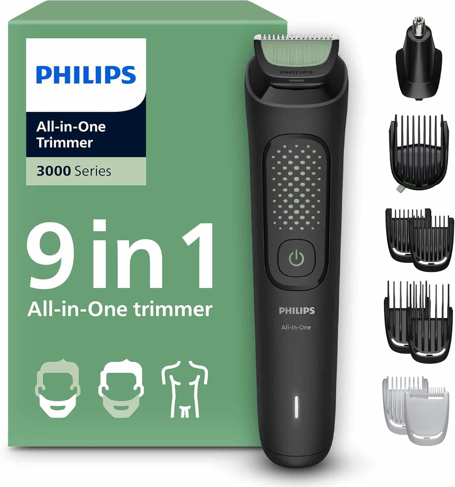
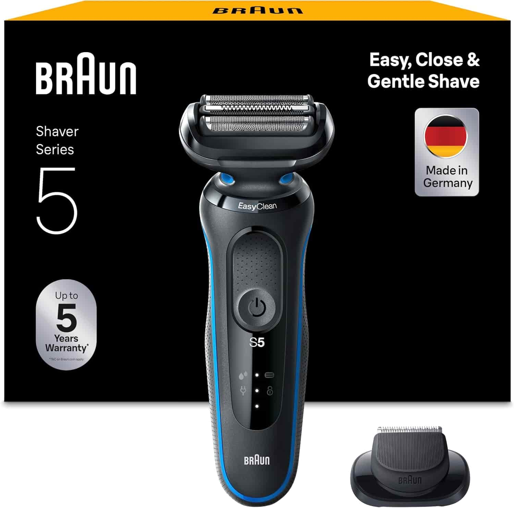
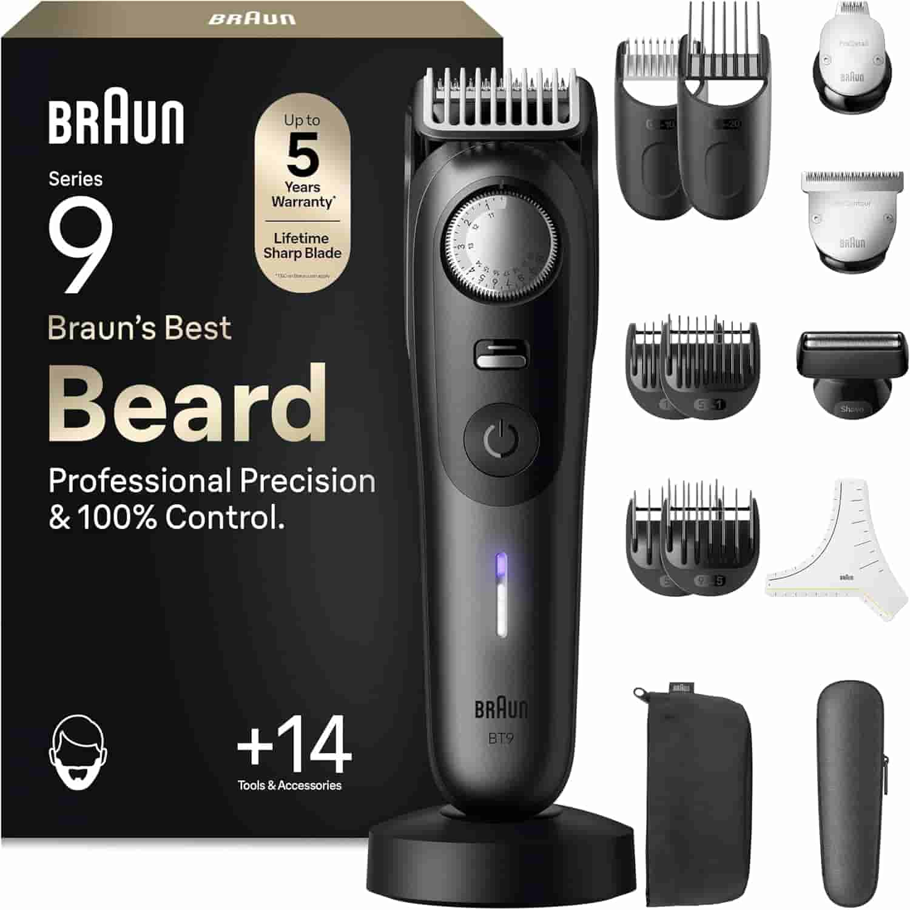
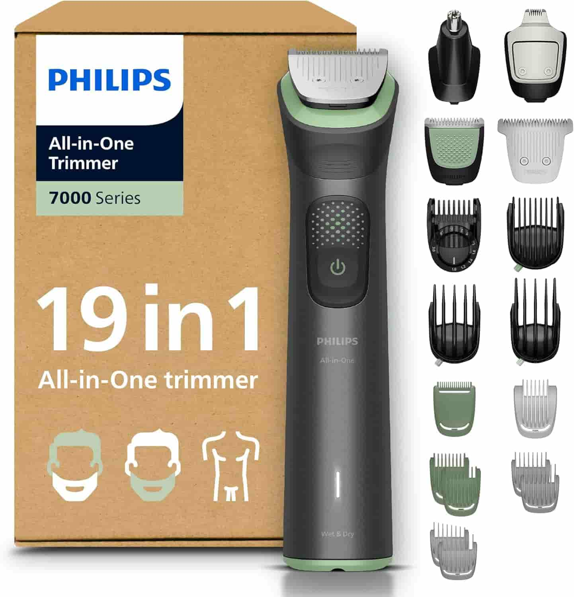
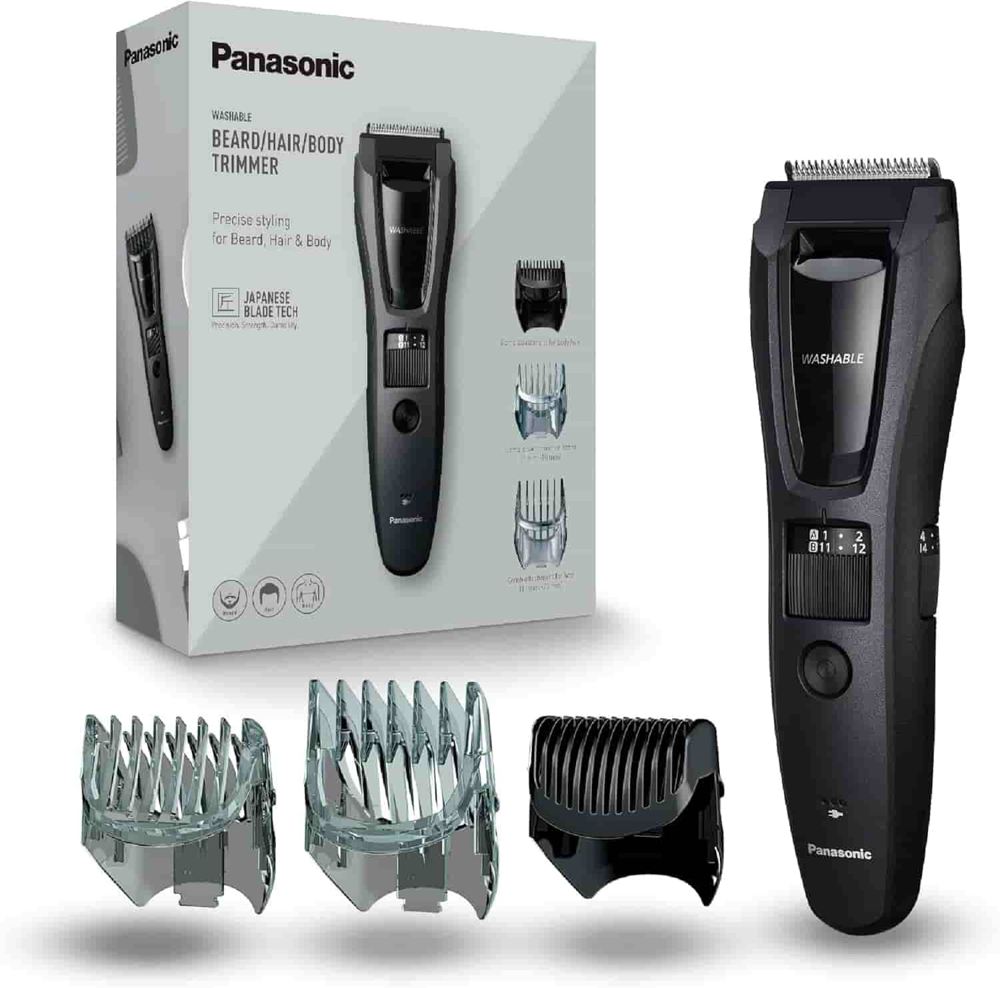
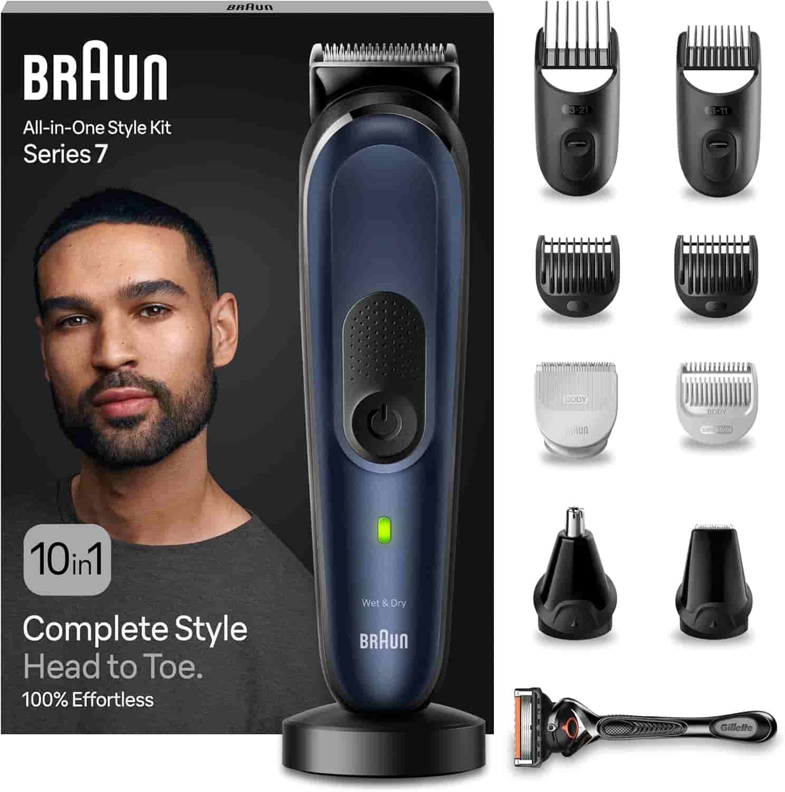

Migliori regolabarba

Rifinitore Philips Multigroom Serie 3000: Il tutto-in-uno definitivo
Se cerchi versatilità e precisione in un unico strumento, il Philips Multigroom serie 3000 9-in-1 è la soluzione ideale per la tua routine di grooming. Questo rifinitore elettrico è progettato per soddisfare ogni esigenza, dalla cura della barba e dei capelli fino alla rifinitura di naso, orecchie e corpo. Grazie ai suoi 9 accessori inclusi e alle 12 impostazioni di lunghezza (che spaziano da 0,5 a 12 mm), potrai modellare il tuo stile con estrema facilità, ottenendo risultati professionali direttamente a casa tua. Il cuore tecnologico di questo dispositivo sono le lame autoaffilanti, progettate per rimanere precise nel tempo senza necessità di lubrificazione. La tecnologia con punte arrotondate assicura la massima delicatezza sulla pelle, prevenendo irritazioni anche nelle zone più difficili. Un punto di forza esclusivo è il pettine per le parti intime, studiato appositamente per proteggere le aree sensibili durante il taglio. Con una potente batteria al litio che garantisce ben 90 minuti di autonomia e la comodità della ricarica USB-A, questo Multigroom rappresenta un investimento intelligente per chi desidera un prodotto affidabile, completo e facile da usare.
Vedi su Amazon
Braun Series 5: Tecnologia AutoSense per una rasatura senza sforzo
Il Braun Series 5 è la scelta perfetta per chi cerca una rasatura profonda semplificata senza rinunciare al comfort. Grazie alle sue 3 lame flessibili che si adattano perfettamente ai contorni del viso, questo rasoio elettrico garantisce un contatto costante con la pelle anche nelle zone più difficili. La vera innovazione risiede nella tecnologia AutoSense, un sistema intelligente che rileva la densità della tua barba e adatta automaticamente la potenza del motore, permettendo di catturare e tagliare più peli a ogni singola passata, rendendolo estremamente efficiente anche su barbe folte. La manutenzione non è più un problema grazie al sistema EasyClean, che permette di pulire il rasoio in modo rapido e igienico sotto l'acqua corrente senza dover rimuovere la testina. Progettato per la massima versatilità, il Braun Series 5 è 100% impermeabile, ideale sia per un uso a secco che per una rifinitura Wet&Dry con schiuma o gel. La batteria Li-Ion di alta qualità offre fino a 3 settimane di autonomia con una sola ricarica, mentre la funzione di ricarica rapida da 5 minuti assicura una rasatura completa nei momenti di fretta. È uno strumento robusto e affidabile, pensato per chi desidera velocità, precisione e una pelle liscia ogni giorno.
Vedi su Amazon
Braun Regolabarba Serie 9: Precisione Professionale da Barbiere
Il Braun Regolabarba Serie 9 si posiziona come il punto di riferimento per chi non accetta compromessi nella cura del proprio look. Progettato per offrire una precisione professionale, questo dispositivo integra l'esclusiva lama ProBlade, capace di catturare anche i peli più ostinati e piatti. La sua potenza è gestita in modo intelligente dalla tecnologia AutoSense, che adatta la performance alla densità della barba, supportata dalla modalità PowerBoost per affrontare senza esitazioni le zone più folte e difficili, garantendo un'uniformità impeccabile ad ogni passata. Il vero punto di forza di questo modello premium è il controllo totale che offre all'utente: grazie al selettore di precisione, è possibile scegliere tra ben 52 impostazioni di lunghezza, con intervalli millimetrici da 0,25 mm per sfumature e contorni da manuale. Il kit è estremamente generoso e include 14 strumenti da barbiere, tra cui stencil per la barba, pettini specifici e una pratica custodia da viaggio. Con una batteria a lunga durata e un design ergonomico di alta qualità, il Braun Serie 9 trasforma la routine quotidiana in un'esperienza di styling avanzato, permettendoti di ottenere linee perfette e finiture curate come se fossi appena uscito dal salone.
Vedi su Amazon
Philips Multigroom Serie 7000 19-in-1: Versatilità senza confini
Il Philips Multigroom Serie 7000 è il compagno definitivo per chi desidera una cura del corpo totale con un unico dispositivo. Grazie ai suoi 19 accessori, questo rifinitore all-in-one gestisce con estrema facilità barba, capelli, peli del corpo e zone delicate come naso e orecchie. Il punto di forza è l'incredibile personalizzazione del taglio: con 26 impostazioni di lunghezza (da 0,5 a 20 mm) e un pettine di precisione premium che permette micro-regolazioni da 0,2 mm, ottenere lo stile esatto che hai in mente diventa un'operazione semplice e millimetrica. La tecnologia all'avanguardia è il cuore di questo modello: il sistema BeardSense analizza la densità della tua barba ben 125 volte al secondo, adattando la potenza istantaneamente per domare anche i peli più folti e lunghi senza strappi. Le lame in acciaio autoaffilanti garantiscono prestazioni costanti nel tempo senza necessità di manutenzione o lubrificazione. Che tu debba definire i contorni di guance e collo con il rifinitore in metallo o creare linee pulite con l'accessorio di precisione, il design ergonomico e sottile ti offre un controllo superiore. È uno strumento robusto e professionale, ideale per chi cerca il massimo della tecnologia Philips applicata al grooming quotidiano.
Vedi su Amazon
Panasonic ER-GB62: Precisione Giapponese per Barba, Capelli e Corpo
Il Panasonic ER-GB62 si distingue nel panorama del grooming per la qualità superiore delle sue lame in acciaio inossidabile a 45°, realizzate con la rinomata maestria tecnologica giapponese. Queste lame, estremamente resistenti e affilate, sono progettate per tagliare con precisione qualsiasi spessore di pelo, rendendo questo dispositivo un vero sistema 3-in-1 ideale per la cura di barba, capelli e corpo. Grazie ai tre pettini accessori separati, il passaggio dalla rifinitura del viso al taglio dei capelli avviene in modo rapido, semplice e confortevole. La personalizzazione dello stile è garantita da una pratica ghiera che permette di scegliere tra ben 39 impostazioni di lunghezza, con intervalli precisi da 0,5 mm per un range totale che va da 0,5 a 20 mm. Il design ergonomico e impermeabile non solo facilita l'impugnatura, ma rende la manutenzione igienica e veloce, permettendo di sciacquare il dispositivo direttamente sotto l'acqua corrente. Perfetto anche per chi è spesso in movimento, questo regolabarba offre 50 minuti di utilizzo senza fili con una ricarica rapida di un'ora, ma può essere utilizzato anche con cavo alimentato. La tensione universale e la custodia inclusa lo rendono il compagno di viaggio ideale per chi non vuole rinunciare a un look impeccabile ovunque si trovi.
Vedi su Amazon
Braun Styling Kit 10-in-1: La soluzione totale per il grooming maschile
Il Braun Styling Kit 10-in-1 è il sistema completo progettato per chi desidera gestire il proprio look dalla testa ai piedi con un unico, potente strumento. Grazie alla sua vasta gamma di accessori, questo kit permette di rifinire la barba, regolare i capelli, rimuovere i peli di naso e orecchie e procedere alla depilazione del corpo in totale sicurezza. La lama in metallo ultra-affilata assicura una rasatura rapida ed efficiente su ogni zona, garantendo passate fluide e senza strappi per un risultato impeccabile in tempi record. Uno dei punti di forza di questo regolabarba è l'integrazione della tecnologia AutoSense, che analizza la densità dei peli in tempo reale e adatta la potenza del motore per offrire prestazioni costanti, indipendentemente dallo spessore o dalla lunghezza della barba. Pensato per una lunga durata nel tempo, il dispositivo vanta una potente batteria Li-Ion che offre ben 100 minuti di autonomia senza fili ed è 100% impermeabile, permettendoti di utilizzarlo comodamente anche sotto la doccia. Con la base di ricarica e la pratica custodia incluse, questo kit rappresenta l'alleato ideale per ogni fase della tua routine di bellezza domestica, offrendo versatilità e affidabilità in un unico pacchetto premium.
Vedi su Amazon